Compileren is een van mijn leerdoelen waar ik meer van wil leren. Ik vind het leuk om te kunnen programmeren, maar ik wil ook graag weten wat er na het programmeren gebeurt. Een computer kan geen code lezen maar een computer leest instructies. Ik ga dieper in op de manier hoe dit werkt en hoe die instructies wel door de computer begrepen worden.
Compiler
Het compileren van een applicatie wordt gedaan met een compiler. Een compiler is een programma wat code om kan zetten naar een andere taal. Deze andere talen zijn vaak veel lagere level talen zoals Assembly of machine code zodat er een uitvoerbaar programma ontstaat dat een computer kan lezen. Het compileren van een applicatie bevat vier stappen: Preprocessing, Compiling, Assembler en Linking.

Afbeelding 1 Compileer stappen
Preprocessing
Preprocessing is de eerste stap van het compilatie process. Binnen preprocessing worden 4 stappen uitgevoerd:
- Trigraph replacement - Dit is het vervangen van karakters zoals '??('' dat volgens de programmeertaal specificaties niet nodig zijn, dit wordt tegenwoordig bijna niet meer gebruikt, maar mogelijk in oudere libraries die geimporteerd worden wel;
- Line splicing - Dit is het splitsen van escape karakters zoals '\n';
- Tokenization - Dit verwijderd commentaar;
- Macro expansion and directive handling - Macro's zijn bijvoorbeeld in de C programmeertaal '#define', '#defineif' en '#endif'. Als een '#defineif' niet waar is dan wordt die code verwijderd.
Compiling
Compiling is de tweede stap van het compilatie process. Deze stap bestaat uit 6 stappen: Lexial analysis, Syntax analyzer, Semantic analyzer, Intermediate Code Generator, Code Optimizer en Target Code Generation.

Afbeelding 2 Compiler stappen
Lexial analysis
Lexial analysis, ook wel lexing genoemd, is de eerste fase binnen de compiler. Lexing is het omzetten van bepaalde strings in code naar een token. Verschillende tokens zijn:
- Identifiers - Dit zijn namen die de programmeur heeft bedacht voor variablen om code leesbaar te maken;
- Keywords - Dit zijn namen die al in de code bestaan zoals 'while', 'return', 'if', 'break';
- Seperators - Dit zijn haakjes en komma's etc zoals '{', '}', '(', ')', ',', ';', ':';
- Operators - Dit zijn rekentekens zoals '+', '-', '*', '~';
- Iteral - Dit zijn nummers, strings, booleans zoals '1', '"some text"', 'false', 'true';
- Comment - Dit is door de programmeur gedefinieerd commentaar. Dit kan uitgeschakelde code zijn of gewoon text voor de programmeurs.
Een heel stuk code kan via lexing omgezet worden naar deze tokens, de output van een voorbeeld stukje code staat hieronder vermeld:
Het voorbeeld code is: someNumber = otherNumber + 15 - (5 * 3);
De output van lexing is: [(identifier, someNumber), (operator, =), (identifier, otherNumber), (operator, +), (iteral, 15), (operator, -), (seperator, (), (iteral, 5), (operator, *), (iteral, 3), (seperator, )), (seperator, ;)]
Syntax analyzer
De syntax analyzer is de tweede fase van de compiler en deze fase checkt dat de code voldoet aan de code syntax. Als er een stukje Java code is als: 'int number = 4;' dan voldoet dit aan de syntax vereisten van de Java programmeertaal. Als dit stukje code geschreven zou staan als: 'int 4 = 4;', dan voldoet dit niet aan de syntax omdat de eerste '4' geen iteral is terwijl dit wel verwacht wordt.
Semantic analyzer
Semantic analyzer is de derde fase van de compiler. Deze fase controleert of de code declaraties correct zijn. Een belangrijk deel hiervan is het controleren van datatypes. Als een datatype niet klopt zoals het voorbeeld van dit stukje code: 'int number = "something";' of 'if (25.9 == true)', dan gaat het compileren fout omdat de types niet overeenkomen en krijgt de gebruiker hier een melding van zoals dit voorbeeld:
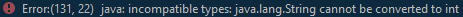Afbeelding 3 Type error
Intermediate Code Generator
Intermediate code is de vierde fase van de compiler. Deze fase elimineert de noodzaak van een nieuwe volledige compiler voor elke unieke machine door het analysegedeelte voor alle compilers hetzelfde te houden. Dit kan gedaan worden in een van deze drie stappen:
- Postfix Notation - Dit is het schrijven van code als: '(a + b) + (c - D)' als: 'ab + cd -+';
- Three-Address Code - Dit is het schrijven van code als: '(a + b) + (c - D)' als: 't1 = a + b; t2 = c - d; t3 = t1 * t2;';
- Syntax Tree - Dit maakt een hele tree van de code als: 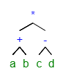
Afbeelding 4 Syntax tree
Code Optimizer
Code Optimizer is de vijfde fase van de compiler. Deze zorgt ervoor dat de code verder geoptimaliseerd wordt om zo het CPU en RAM verbruik te verminderen door bepaalde code anders te schrijven dan eerste instantie was. Dat zou kunnen als in het volgende voorbeeld het eerste stukje code te herschrijven naar het tweede stukje code. Door niet in iedere iteratie een nieuw variable aan te maken, scheelt dit wat RAM verbruik.
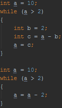Afbeelding 5 Code optimizing
Target Code Generation
Target Code Generation is de zesde en laatste fase van de compiler. Deze fase zorgt dat de code omgezet wordt naar Assembly code.
Een while loop in java die er uitziet als volgt:
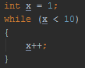Afbeelding 6 While loop Java
Zou in Assembly eruit komen zien als:
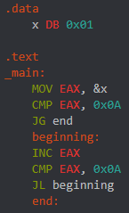Afbeelding 7 While loop Assembly
Assembler
Assembler is de derde stap van het compilatie process. Ieder platform heeft een eigen assembler om de gegenereerde assembly code uit de vorige stappen om te zetten naar machine code. De output van deze stap is een object file. Eigenlijk vertaalt deze stap assembly code naar machine code. Machine code praat rechtstreeks met de 'API' van de CPU. De CPU heeft niet echt een 'API', maar op basis van deze instructies kan de CPU bepaalde taken uitvoeren wat uiteindelijk weer gebruikt wordt om met het geheugen of registers te communiceren. De Assembly taal dat uit de vorige stap komt is nog redelijk leesbaar voor mensen, machine code is zo goed als niet meer leesbaar voor de meeste mensen.
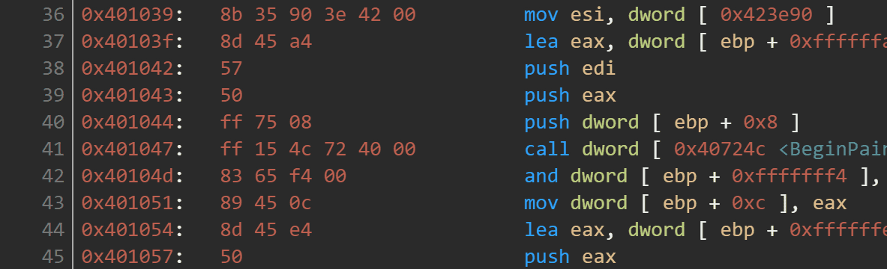Afbeelding 8 Machine code
Linking
Linking is de vierde en laatste stap van het compilatie process. Deze stap gebruikt de eerder gemaakte machine code en koppelt deze aan de libraries die gebruikt worden binnen de geschreven code. De uitkomst van de geschreven code en de libraries wordt één uitvoerbaar programma.
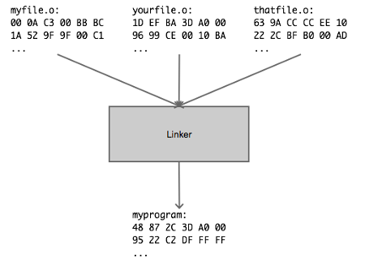Afbeelding 9 Linker
Interpreter
Een interpreter is een programma dat code direct analyseert op het gedrag en direct als instructies uitvoerd in plaats van dat deze eerst naar machine code gezet wordt. Het voordeel van een interpreter is dat deze vanuit source code direct uitgevoerd kan worden, een nadeel is dat dit iedere keer opnieuw moet bij het gebruik van de applicatie en dus kost dit meer systeem bewerkingen. In tegenstelling van een compiler, kan een compiler de code omzetten dat later vaker gebruikt kan worden zonder dat deze iedere keer opnieuw gecompileerd moet worden. Bij talen waar datatypes belangrijke toepassingen zijn, is een compiler beter te gebruiken dan een interpreter. Python is een voorbeeld van een taal die een interpreter gebruikt, deze kan direct in een terminal gebruikt worden om bijvoorbeeld iets snel te kunnen testen zonder dat hier een heel compilatieprocess bij komt kijken.
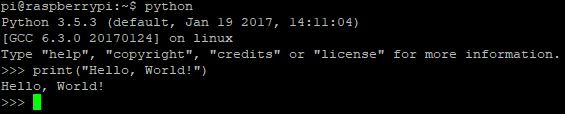Afbeelding 10 Pythin direct in terminal
Disassembly
Het is ook mogelijk om een aplpicatie terug te zetten naar leesbare code, dit heet decompileren en dit gebeurt via een decompiler. Een decompiler is eigenlijk het tegenovergestelde van een compiler. De code als uitkomst van een decompiler is vaak werkende code en kan weer gecompileerd worden, maar de code is vaak niet 100% hetzelfde als de orginele code. Decompilers worden vaak gebruikt voor reverse engineering van applicaties. In mijn workshop van reverse engineering gebruik ik ook een decompiler. Hier is ook goed het verschil te zien van de orginele code en de gedecompileerde code, wat te zien is tussen afbeelding 3 en 5, en tussen afbeelding 8 en 9 van de workshop. De werking van deze code's zijn hetzelfde alleen ze zien er anders uit. Soms kunnen variablen namen ook niet teruggehaald worden en worden deze vervangen met andere namen zoals dit voorbeeld hieronder waarin eerst de source code te zien is met daaronder de mogelijk gedecompileerde code:
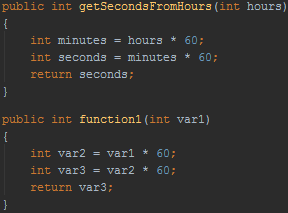Afbeelding 11 Variable namen
Instructies
De instructies dat een systeem kent hangt van de CPU af. 2 bekende voorbeelden hiervan zijn de x86 en de arm instructie sets. Een instructie voor het ophalen van data uit een geheugenlocatie werkt anders op arm dan op x86. Een CPU kent veel verschillende instructies om verschillende taken uit te voeren. In de x86 Assembly programmeertaal zelf wordt gebruik gemaakt van een x86 instructie set. Deze instructies zijn door mensen te lezen en worden later door de CPU omgezet naar opcode. Opcode wordt als hexidecimaal of binair gepresenteerd die de CPU kent. De CPU kan deze opcode vervolgens naar het geheugen sturen. Voornamelijk zijn deze opcode's verschillend per instructie set. De opcode voor de MOV instructie gepresenteerd als hexadecimaal kan op de ene instructie set 0xAB zijn, en op de andere instructie set 0x0F; bij de intel x86 instructie set is de opcode voor MOV: 0xA0, 0xA1, 0xA2 en 0xA3. Opcode zelf wordt zelden tot nooit door mensen geprogrammeerd.
Toepassen
Het is mogelijk om de vier stappen: Preprocessing, Compiling, Assembler en Linking te bekijken tijdens het compileren van een programma. Om dit ook een keer gedaan te hebben ga ik een klein c programma wat 'main.c' heet, stap voor stap compileren zodat er een goed beeld is van deze stappen. De code hiervoor gebruikt is te zien in de onderstaande afbeelding.
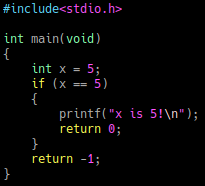Afbeelding 12 C programma
Om alleen de preprocessing stap uit te voeren, moet het volgend commando uitgevoerd worden: 'gcc -E main.c -o main.i'. In de uitkomst hiervan is te zien dat de '#include<stdio.h>' vervangen is met een hele hoop andere code.
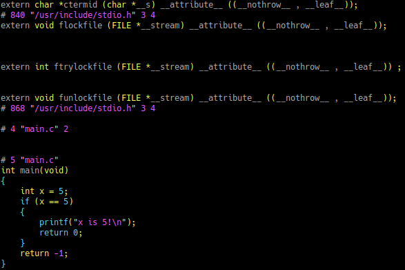Afbeelding 13 Preprocessing
Als ik de compiling stap wil uitvoeren, dan moet ik de output van de preprocessing stap (main.i) gebruiken als input voor deze stap en vervolgens het commando: 'gcc -S main.i -o main.s' uitvoeren. In de output hiervan is te zien dat dit nog herkenbare leesbare assembly code is.
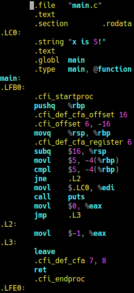Afbeelding 14 Compiling
Daarna is de assembler aan de beurt. Om deze te kunnen uitvoeren moet de output van de compiling stap (main.s) gebruikt worden als input voor het volgende commando: 'gcc -c main.s -o main.o'. De output hiervan is zoals te zien niet meer menselijk leesbaar. Er staan nog wat bekende assembly secties zoals '.data' en '.bss'.
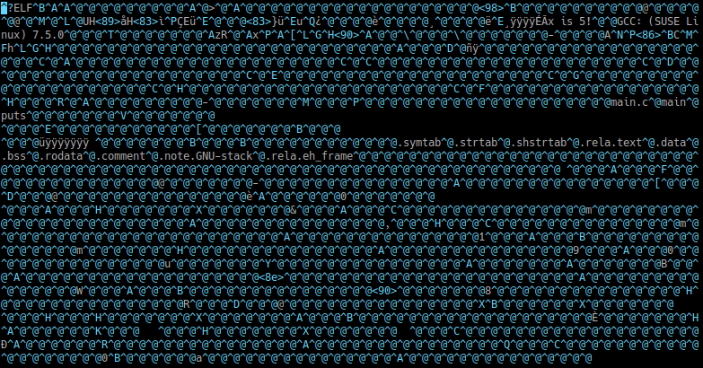Afbeelding 15 Assembler
Als laatste stap kan het programma nog gelinkt worden met de libraries. Ook voor deze stap gebruik ik de output van de assembler stap (main.o). Vervolgens met het commando: 'gcc main.o -o main.out' kan de laatste uitvoerbare output gemaakt worden.
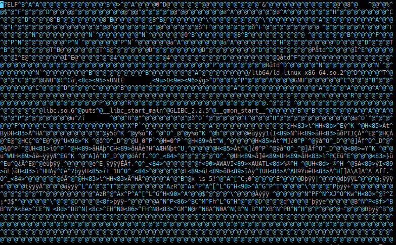Afbeelding 16 Totale output
Dit bestand is werkelijk uitvoerbaar en als ik dit uitvoer krijg ik de output die ik verwacht.
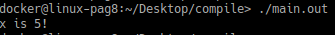Afbeelding 17 Resultaat
Conclusie
Ik heb met deze uitdaging veel geleerd en ik vond het enorm interessant om te zien hoe dit werkt. Vooral het uitvoeren van het compileren per stap geeft mij een goed beeld van hoe dit werkt. Ook de eerder beschreven stappen zie ik overal terugkomen in het uitvoeren wat een hele hoop duidelijk maakt en net de final touch geeft om te begrijpen wat de stappen doen.